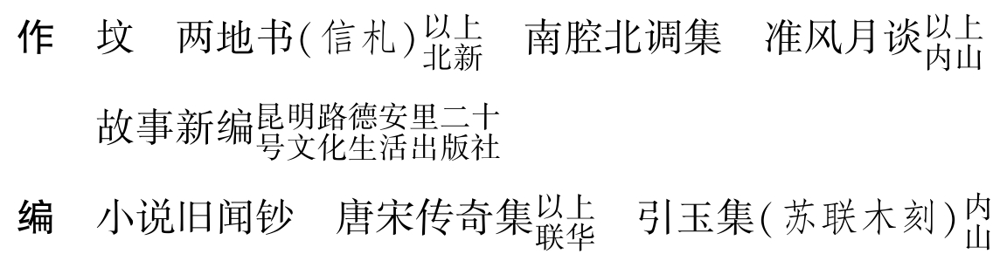
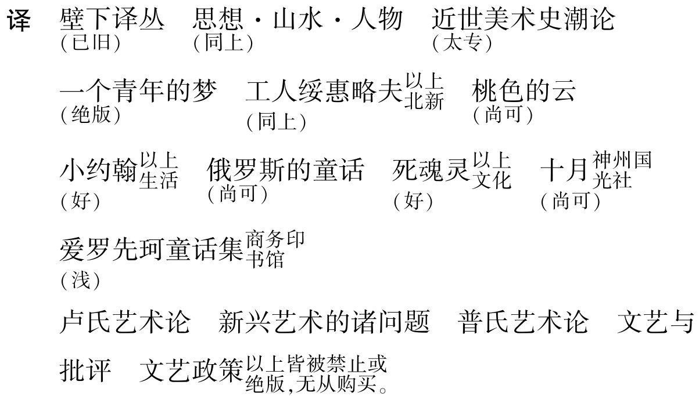

传经先生：
蒙惠函谨悉。《竖琴》的前记，是被官办的检查处删去的，[84]去年上海有这么一个机关，专司秘密压迫言论，出版之书，无不遭其暗中残杀，直到杜重远的《新生》事件[85]，被日本所指摘，这才暗暗撤消。《野草》的序文[86]，想亦如此，我曾向书店说过几次，终于不补。
《高尔基文集》非我所译，系书店乱登广告，此书不久当有好译本[87]出版，颇可观。《艺术论》等久不印，无从购买。我所译著的书，别纸录上，凡编译的，惟《引玉集》，《小约翰》，《死魂灵》三种尚佳，别的皆较旧，失了时效，或不足观，其实是不必看的。
关于研究文学的事，真是头绪纷繁，无从说起；外国文却非精通不可，至少一国，英法德日都可，俄更好。这并不难，青年记性好，日记生字数个，常常看书，不要间断，积四五年，一定能到看书的程度的。
经历一多，便能从前因而知后果，我的预测时时有验，只不过由此一端，但近来文网日益，虽有所感，也不能和读者相见了。
匆此奉复，并颂
春禧
迅 上 二月十九夜。


注 释
[83] 夏传经 当时南京盛记布庄的店员。
[84] 《竖琴》前记被删事，参看341210②信注〔2〕。
[85] 杜重远（1899—1943） 吉林怀德人。1934年在上海创办并主编《新生》周刊。《新生》事件，参看350627信注〔5〕。
[86] 即《野草·题辞》。它被删的事，参看351123信注〔2〕。
[87] 当指瞿秋白译的《高尔基创作选集》和《高尔基论文选集》，收入《海上述林》，当时正在编印。